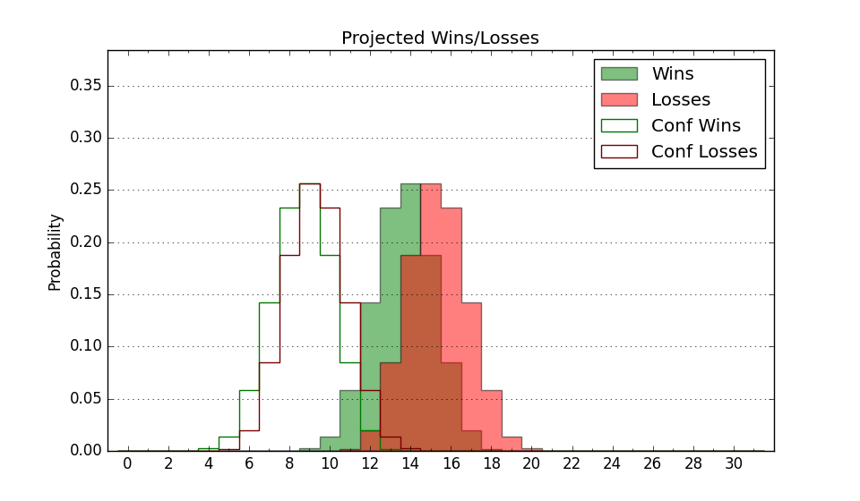

| Home | Game Probabilities | Conferences | Preseason Predictions | Odds Charts | NCAA Tournament |
| City: | Missoula, Montana | |
| Conference: | Big Sky (7th)
| |
| Record: | 3-5 (Conf) 8-11 (Overall) | |
| Ratings: | Comp.: -0.1 (177th) Net: 0.3 (169th) Off: 105.3 (118th) Def: 105.0 (238th) SoR: 0.0 (185th) |
| Remaining | ||||||
|---|---|---|---|---|---|---|
| Date | Opponent | Win Prob | Pred. | |||
| 1/26 | @ Sacramento St. (196) | 38.8% | L 63-66 | |||
| 1/28 | @ Portland St. (223) | 46.7% | L 73-74 | |||
| 2/2 | Northern Colorado (270) | 81.8% | W 79-68 | |||
| 2/4 | Northern Arizona (272) | 81.8% | W 75-65 | |||
| 2/9 | @ Idaho St. (226) | 47.3% | L 66-67 | |||
| 2/11 | @ Weber St. (213) | 43.3% | L 64-65 | |||
| 2/18 | @ Montana St. (104) | 21.5% | L 62-71 | |||
| 2/23 | Portland St. (223) | 74.9% | W 78-70 | |||
| 2/25 | Sacramento St. (196) | 68.4% | W 67-62 | |||
| 2/27 | @ Idaho (289) | 59.1% | W 72-69 | |||
| Previous | Game Score | |||||
| Date | Opponent | Win Prob | Result | Off | Def | Net |
| 11/8 | @Duquesne (142) | 29.0% | L 63-91 | -11.2 | -22.8 | -34.0 |
| 11/11 | @Xavier (26) | 7.6% | L 64-86 | 3.5 | -9.3 | -5.8 |
| 11/17 | St. Thomas MN (221) | 74.6% | W 78-59 | 0.6 | 22.0 | 22.6 |
| 11/18 | Merrimack (338) | 90.7% | W 62-51 | -12.7 | 2.3 | -10.4 |
| 11/19 | Troy (137) | 57.0% | L 62-73 | -11.9 | -6.9 | -18.8 |
| 11/27 | @Air Force (125) | 25.9% | L 56-59 | -10.4 | 6.5 | -3.9 |
| 11/29 | @Southern Miss (96) | 18.9% | L 54-64 | -2.3 | -2.3 | -4.5 |
| 12/6 | South Dakota St. (171) | 64.2% | W 81-56 | 19.9 | 14.3 | 34.2 |
| 12/10 | @North Dakota St. (229) | 48.8% | W 82-75 | 17.9 | -3.8 | 14.1 |
| 12/17 | (N) Prairie View A&M (288) | 72.7% | W 81-76 | 13.6 | -13.7 | -0.1 |
| 12/20 | @Gonzaga (9) | 5.0% | L 75-85 | 10.9 | 1.0 | 11.9 |
| 12/29 | Eastern Washington (140) | 57.9% | L 80-87 | 0.8 | -17.4 | -16.6 |
| 12/31 | Idaho (289) | 83.1% | W 67-56 | -12.8 | 14.2 | 1.5 |
| 1/5 | @Northern Arizona (272) | 57.0% | L 74-75 | -5.1 | -2.5 | -7.6 |
| 1/7 | @Northern Colorado (270) | 56.9% | W 79-74 | 0.9 | 5.4 | 6.3 |
| 1/12 | Weber St. (213) | 72.2% | L 57-59 | -9.7 | -0.6 | -10.3 |
| 1/14 | Idaho St. (226) | 75.3% | W 84-55 | 19.3 | 13.8 | 33.1 |
| 1/16 | @Eastern Washington (140) | 28.8% | L 57-64 | -13.0 | 8.1 | -4.9 |
| 1/21 | Montana St. (104) | 48.2% | L 64-67 | 1.9 | -5.5 | -3.6 |
| Stats & Trends | |||||
|---|---|---|---|---|---|
| Current | Day | Week | Month | Season | |
| Composite | -0.1 | +0.1 | -0.3 | +0.5 | +6.4 |
| Comp Rank | 177 | +2 | -7 | -6 | +67 |
| Net Efficiency | 0.3 | +0.1 | -0.6 | -0.9 | -- |
| Net Rank | 169 | +6 | -4 | -12 | -- |
| Off Efficiency | 105.3 | +0.4 | -0.4 | -1.3 | -- |
| Off Rank | 118 | -5 | -19 | -34 | -- |
| Def Efficiency | 105.0 | -0.3 | -0.2 | +0.3 | -- |
| Def Rank | 238 | +9 | +10 | +14 | -- |
| SoS Rank | 199 | +8 | +42 | -86 | -- |
| Exp. Wins | 13.7 | +0.1 | -0.9 | -1.8 | -0.7 |
| Exp. Conf Wins | 8.7 | +0.1 | -0.9 | -1.8 | -1.0 |
| Conf Champ Prob | 0.1 | -- | -2.5 | -20.9 | -10.4 |

| Advanced Stats | ||
|---|---|---|
| Stat | Value | Rank |
| Off Eff FG % | 0.526 | 98 |
| Off Ast Ratio | 0.148 | 130 |
| Off ORB% | 0.219 | 307 |
| Off TO Rate | 0.154 | 148 |
| Off FT Ratio | 0.320 | 153 |
| Def Eff FG % | 0.492 | 143 |
| Def Ast Ratio | 0.127 | 73 |
| Def ORB% | 0.216 | 32 |
| Def TO Rate | 0.133 | 329 |
| Def FT Ratio | 0.454 | 355 |